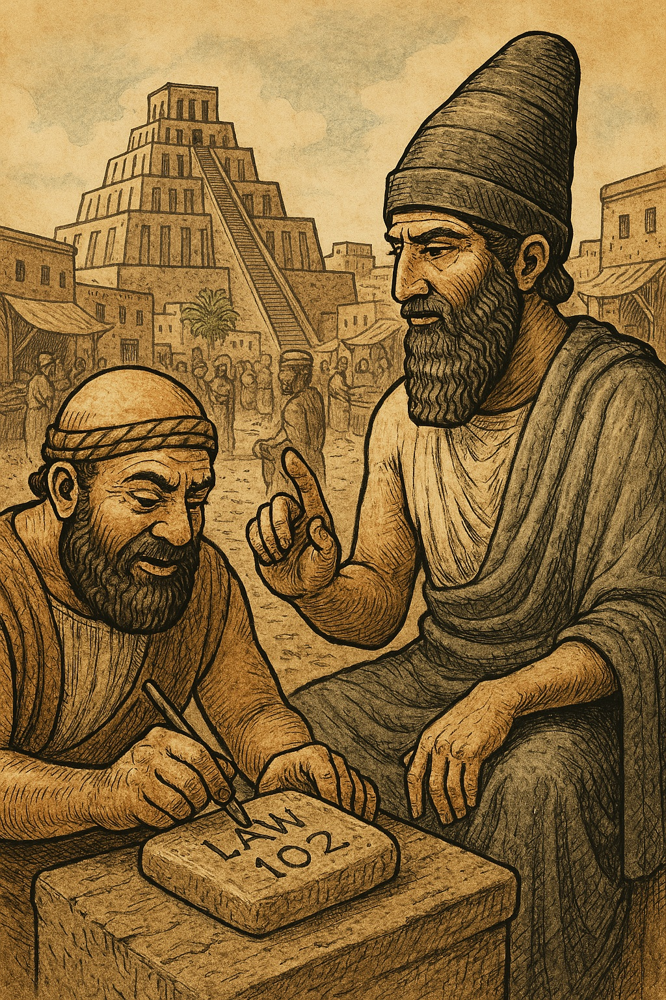
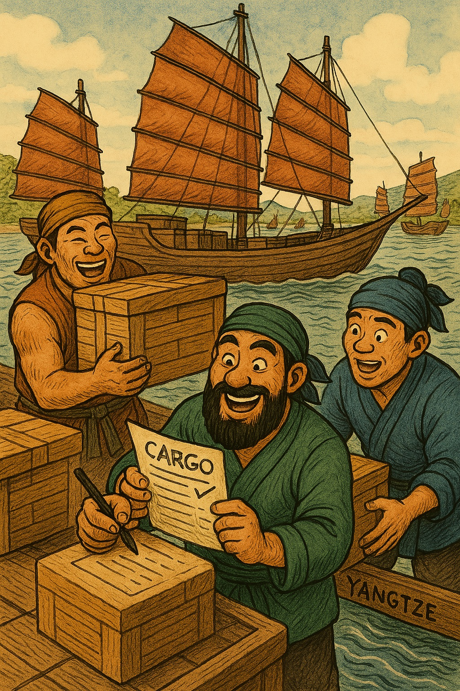

보험계리학의 기원은 고대 문명에서 위험을 체계적으로 관리하려는 노력에서 비롯됩니다. 바빌로니아와 중국은 각각 법적·실천적 제도를 통해 초기 형태의 위험 분산을 실현하였습니다. 이 시대의 제도는 현대 보험의 뿌리를 형성하며, 위험의 수량화와 공유라는 핵심 원리를 제시합니다.
바빌로니아에서는 약 1750 BCE경 함무라비 법전이 핵심입니다. 이 법전은 282개의 조항으로 구성된 점토판 문서로, 무역 상인들의 위험을 법적으로 규정하였습니다.
예를 들어, 법 100~105에서는 화물 운송 대출 시 도난이나 재난으로 인한 손실을 면책하는 시스템을 명시합니다. 추가 금액(보험료와 유사)을 지불하면 총 손실 시 원금만 상환하도록 하였으며, 법 103은 피해 시 맹세로 면책을 허용합니다.
또한, 법 235~238에서는 배 건조자의 과실로 인한 손실 시 가치의 절반을 보상하는 규정을 두어, 손실 규모를 미리 계산하는 개념을 도입하였습니다. 법 240은 배 충돌 시 책임 분배를 규정하며, 이는 위험 평가의 초기 형태입니다.
함무라비 법전은 단순한 법률이 아니라, 메소포타미아 무역 경제의 안정성을 위한 위험 관리 프레임워크로 기능하였습니다. 이 제도는 3천 년 전 상인들의 무역 활성화에 기여하였으며, 재난(Act of God)을 구분하여 보상하는 점에서 현대 보험의 조건적 면책과 유사합니다.
그림 1.1: 함무라비 법전 점토판, 1750 BCE
중국에서는 약 1000 BCE경 상나라 시대부터 시작된 화물 분산 관습이 대표적입니다. 양쯔강과 같은 하천 무역에서 상인들은 화물을 한 배에 집중하지 않고 여러 선박에 나누어 실었습니다. 이는 한 배의 침몰이나 재난 시 전체 손실을 최소화하는 방법으로, 위험을 분산하는 실천적 원리입니다.
이 관습은 인도 상인들과 공유되며 확산되었으며, 현대 보험의 리스크 풀링(risk pooling)과 유사합니다.
중국의 제도는 바빌로니아처럼 법적이지 않았으나, 경제적 배경(상나라와 주나라 초기의 무역 번성)에서 자연스럽게 발전하였습니다. 기록에 따르면, 이 방법은 화물 가치와 손실 확률을 암묵적으로 계산하는 행위로, 상호 보증 같은 시스템을 포함하였습니다.
이 두 문명의 공통점은 위험의 수량화와 분산입니다. 바빌로니아는 법적 제도로, 중국은 관습으로 태동하였으나, 이는 17세기 유럽의 본격적 발전을 위한 기초가 되었습니다.
고대 보험계리학은 무역과 재난 대처의 필요성에서 출발하였으며, 이는 현대 계리 모델의 위험 분산 원리를 예고합니다.
그림 1.2: 양쯔강의 화물 분산 관습, 1000 BCE경
| 문명 | 주요 제도/사건 | 설명 | 보험계리학과의 연관성 |
|---|---|---|---|
| 바빌로니아 | 함무라비 법전 (1750 BCE) | 대출 보장, 손실 면책 법률 (법 100~105, 235~238, 240) | 위험 계산과 보상 체계의 초기 형태, 손실 규모 미리 평가, 조건부 면책 |
| 중국 | 화물 분산 관습 (1000 BCE경) | 여러 선박에 화물 나누기, 상호 보증 시스템 | 위험 분산과 확률적 관리, 리스크 풀링의 뿌리, 화물 가치 암묵적 계산 |